냉연 코일 4,000건의 물성·공정 실적으로, 소둔 이후 발생하는 예외 공정을 사전 판별한다.
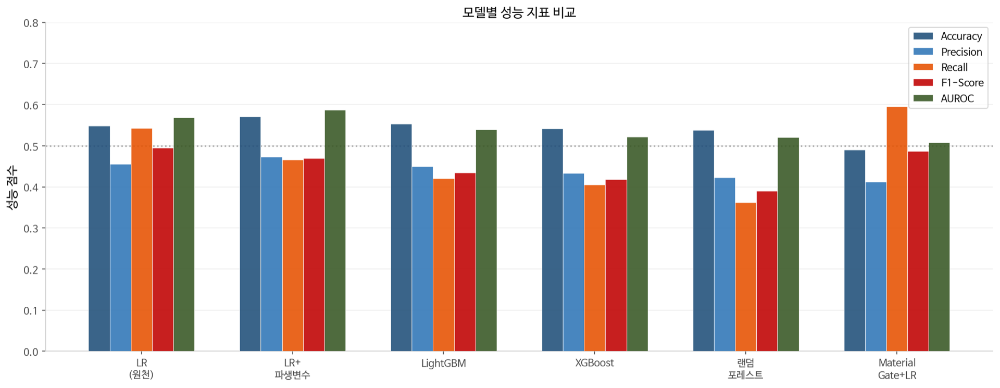
계획된 정규 Skinpass와 달리, 비계획 Skinpass는 소둔 완료 후 품질 검사에서 표면·형상·재질이 기준에 미달한 코일에 대해 긴급 투입되는 예외 공정이다. 수집된 데이터 기준 전체 코일의 40.8%에서 비계획이 발생하고 있으며, 이는 설비 가동률 저하, 납기 지연, 에너지 추가 소비, 물류 비용 증가를 동시에 유발한다.
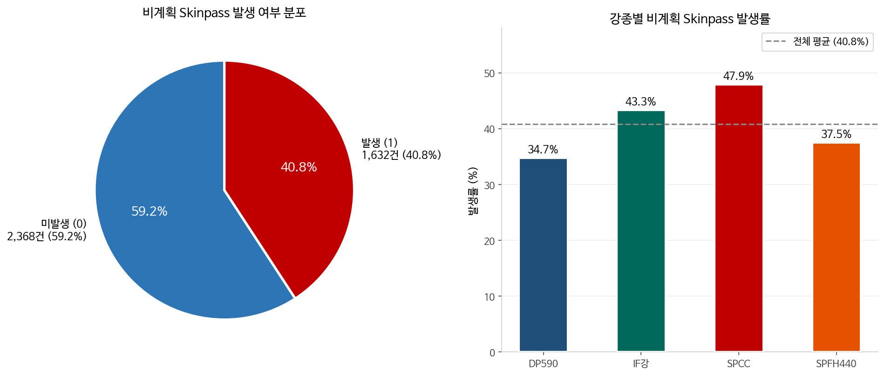
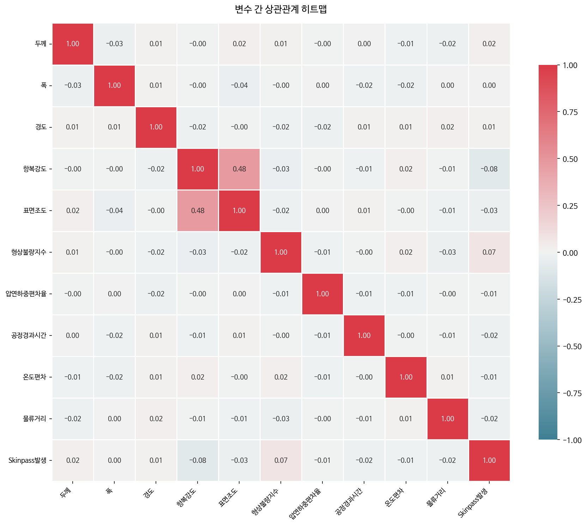
Fig. 3-1 · 항복강도·표면조도 r=0.48 핵심 교호작용. 형상불량지수·비계획 발생 r=+0.074 단독 효과 제한.
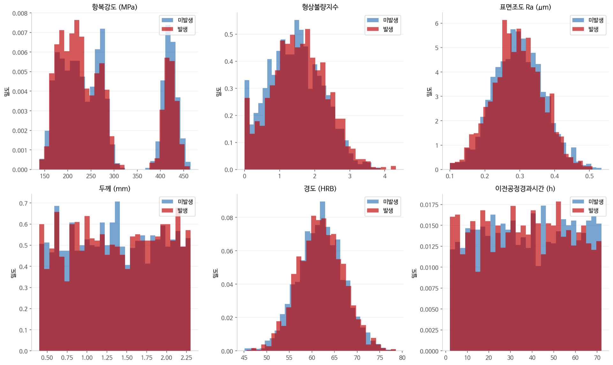
Fig. 3-2 · 발생·미발생 그룹별 주요 수치형 변수 분포 비교. 이전공정경과시간 두 그룹 간 분포 차이 미미, 예측력 낮아 제거.
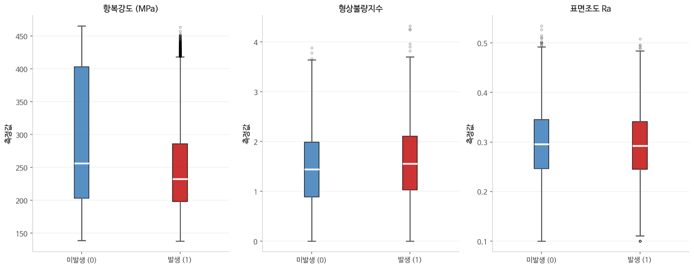
Fig. 3-3 · 항복강도 발생 그룹 중앙값이 미발생 그룹 대비 낮게 형성. 형상불량지수는 발생 그룹 이상치 범위에서 높은 값 집중.
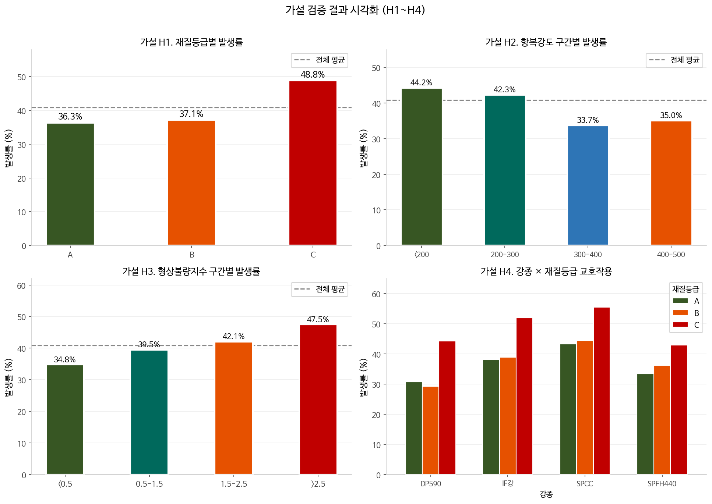
H1~H4 가설 기반 파생변수 4개가 SHAP 중요도 상위 8개 이내에 모두 포함됐다. 공정위험복합·품질위험점수가 1·2위.
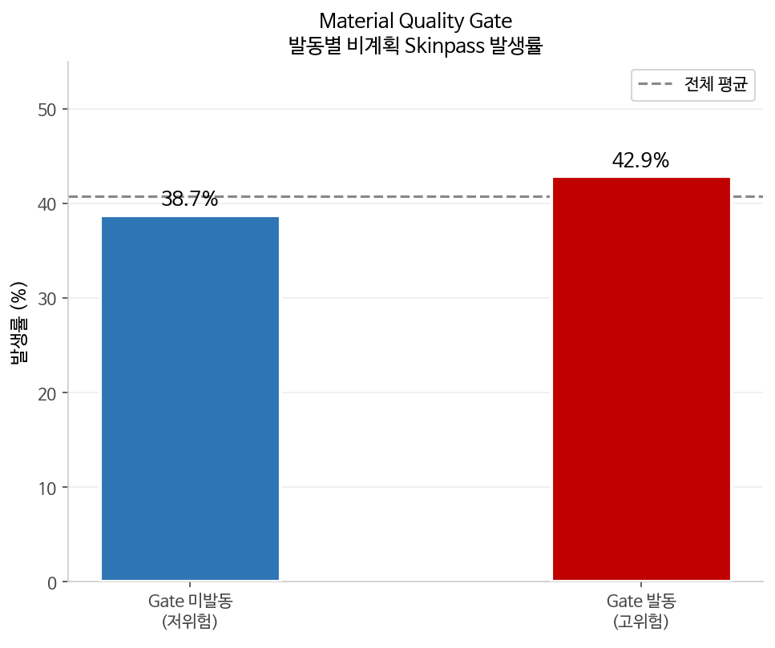
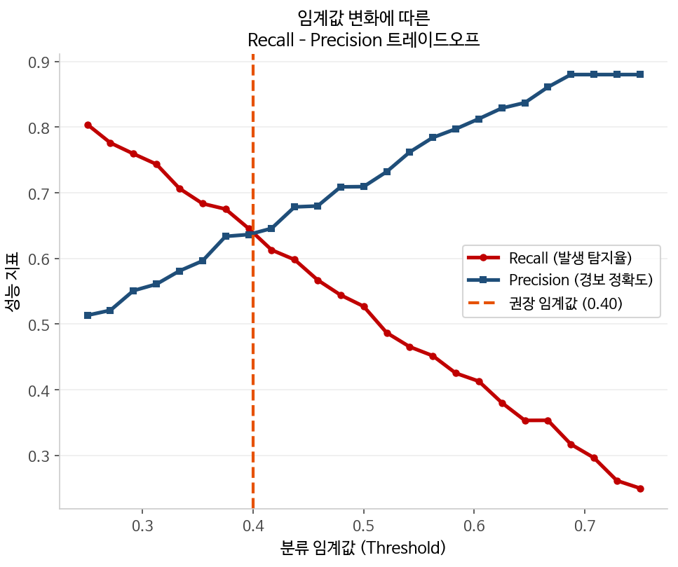
미발생 59.2% · 발생 40.8%로 완전 불균형은 아니나 Accuracy 단일 지표로는 평가 불가한 구조.
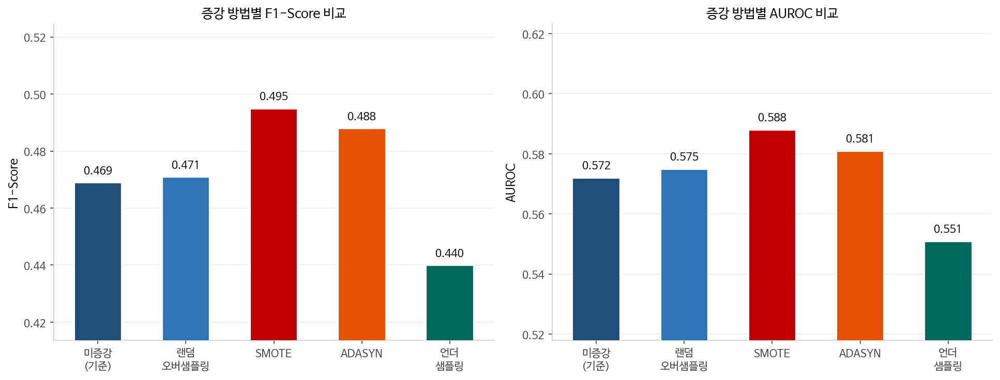
| METHOD | TRAIN N | F1 | AUROC |
|---|---|---|---|
| 미증강 (기준) | 3,200 | 0.469 | 0.572 |
| 랜덤 오버샘플링 | 4,736 | 0.471 | 0.575 |
| ★ SMOTE | 4,736 | 0.495 | 0.588 |
| ADASYN | 4,741 | 0.488 | 0.581 |
| 언더샘플링 | 3,264 | 0.440 | 0.551 |
언더샘플링은 정보 손실로 오히려 성능 저하.
SMOTE가 F1 +0.026 · AUROC +0.016 달성.
Recall을 1순위 지표로 잡은 결과, Material Gate + LR이 6개 비교군 중 단독 1위.
| MODEL | RECALL | F1 |
|---|---|---|
| ★ Gate + LR | 0.595 | 0.487 |
| LR (원천) | 0.543 | 0.501 |
| LR + 파생 | 0.466 | 0.469 |
| LightGBM | 0.420 | 0.427 |
| XGBoost | 0.407 | 0.416 |
| 랜덤포레스트 | 0.399 | 0.413 |
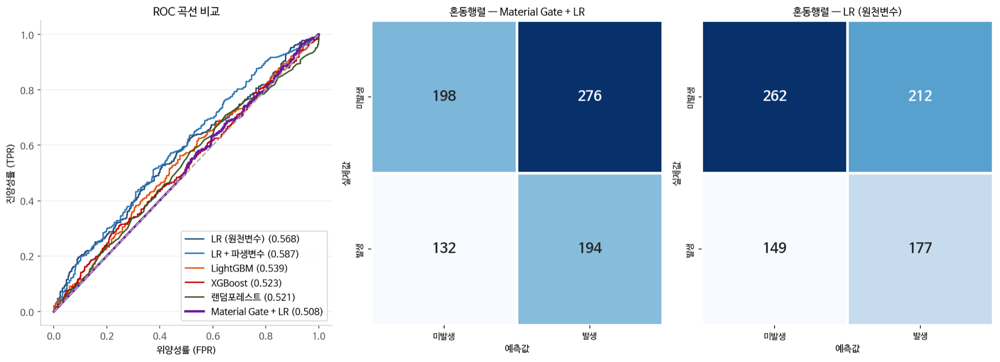
Fig. 7-1 · Gate+LR FN 163건 vs LR 원천 187건. 미탐지 −24건.
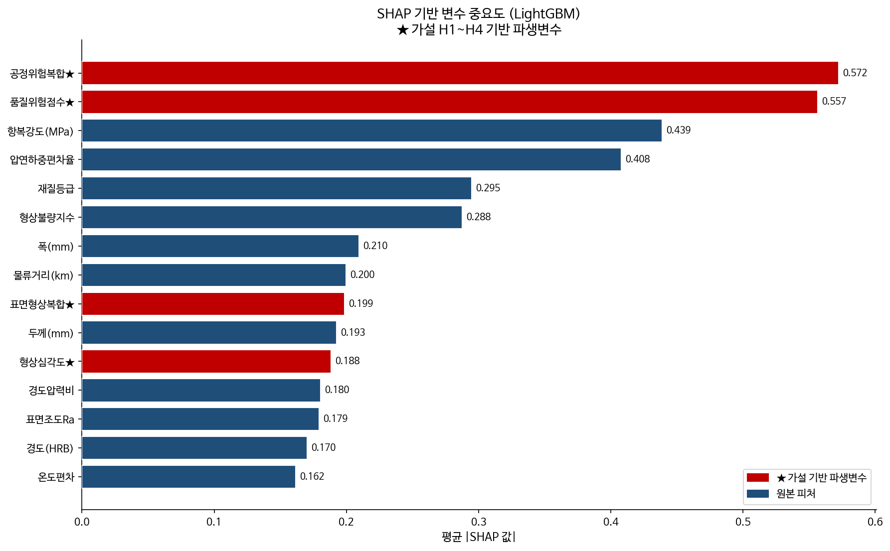
Fig. 7-2 · SHAP 변수 중요도 (LightGBM). 가설 파생변수 상위 1·2위 차지.